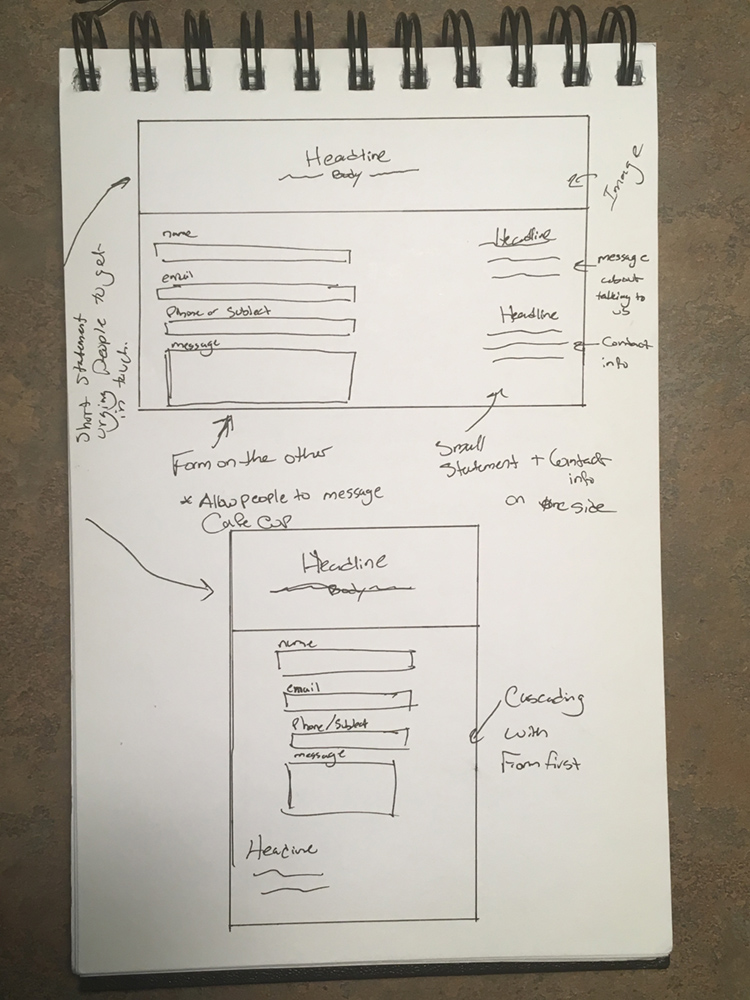

Header
The main means of navigation for the site. The three main categories are the menu items, the merchandise, and the information about the shop and brand. Also includes a sign in area for those who make frequent purchases.
Hero
The hero was created specifically to draw the viewers attention to the page. Having a hero with an image like this one and this tone of copy will definitely peak the interest of many users. Especially, newcomers who have never heard of Cafe Cup.The hero also has a call to action button for those who may not want to see the entire first page.
Seasonal Promotion
This small section is just a way of advertising Cafe Cup's seasonal offerings. It didn't need to be a whole new section since it's just an add-on.
Product 1
This product section utilizes a grid system with three sections that users can click on. As a way of showcasing our main product (beverages), it needed to be something that is easily accessible and easily clickable. This is where most users will stop on the site seeing as though they really just want to try our products.

Product 2
The second product section is an addition to the first product section. It's where we boast about our pastries that customers might also enjoy. I decided to use a carousel instead of a grid because it's not as important so users can wait a bit longer for this information without becoming impatient. It's also a way of enticing the viewer to want to see more of what we have. The point is to stop the viewer from scanning the page so quickly and to have them stop and see what else we offer.
Product 3
The third product section showcases our merchandise. This section really isn't for first timers. It's for those who know the brand, have become acquainted and want quick access to other products. It's for those who want to extend the brand experience even more. A grid was the best choice because it allows familiar users to quickly scan and choose a product or product category.
About Us
The about section tells the story of the brand and how we came to be. It showcases our vision for us as well as our prized customers and is broken up into two subsections for easy readability.
Contact
The contact section allows users to directly message Cafe Cup. This interface will benefit people who may have questions, want to request something, or who just want to relay feedback on their experience. Because of this, the form section takes up the most space.
Footer
The footer is just a reiteration of some of the main things in the content section. It includes a short sentence about Cafe Cup, links to other pages, a list of social media services that people can connect with and the address of the shop. This is also broken up in a way that allows users to quickly scan the footer for information they may be looking for.